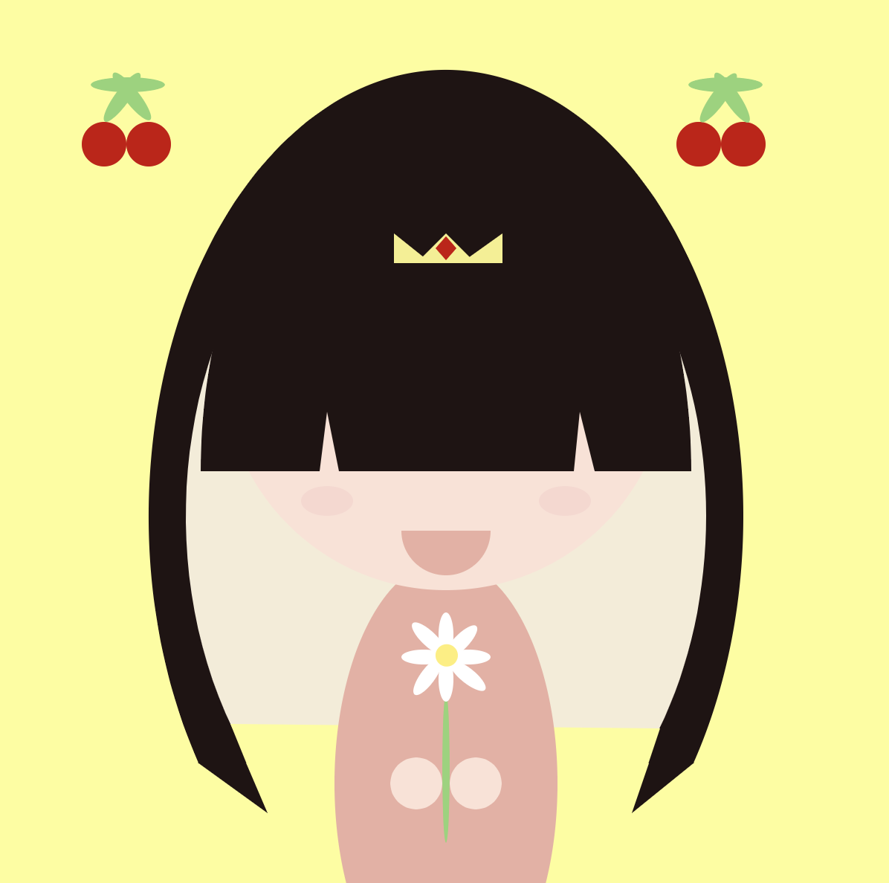

<!DOCTYPE html>
<html>
<head>
<style>
body {
  background-color:ivory;
}
</style>
</head>
<body>
</body>
</html>
<!DOCTYPE html>
<html>
<head>
<title>SWselfie</title>
<meta name="viewport" content="width=device-width, initial-scale=1">
<style>
body {
  font-family: Arial, Helvetica, sans-serif;
  font-size: 15px;
}

#myBtn {
  display: none;
  position: fixed;
  bottom: 20px;
  right: 30px;
  z-index: 99;
  font-size: 18px;
  border: none;
  outline: none;
  background-color: black;
  color: white;
  cursor: pointer;
  padding: 5px;
  border-radius: 5px;
}

#myBtn:hover {
  background-color: #559;
}
</style>
</head>
<body>

<button onclick="topFunction()" id="myBtn" title="Go to top">Top</button>


<script>
//Get the button
var mybutton = document.getElementById("myBtn");

// When the user scrolls down 20px from the top of the document, show the button
window.onscroll = function() {scrollFunction()};

function scrollFunction() {
  if (document.body.scrollTop > 20 || document.documentElement.scrollTop > 20) {
    mybutton.style.display = "block";
  } else {
    mybutton.style.display = "none";
  }
}

// When the user clicks on the button, scroll to the top of the document
function topFunction() {
  document.body.scrollTop = 0;
  document.documentElement.scrollTop = 0;
}
</script>

</body>
</html>

<style>
img {
  display: block;
  margin-left: auto;
  margin-right: auto;
}
</style>
</head>
<body>

<center><h2>P5.JS - Selfie</h2></center>
<center><a href='SWportfolio.html'><button type="button" class="btn btn-primary btn-lg">Home</button></a></center>
<center><p>This is a self portrait drawing I created using P5.JS.  </p></center>


<h3>CODE:</h3>
<pre>
function setup() {
 createCanvas(600, 600);
}


function draw() { 
   background(253,253,150);
  //hair
  noStroke();
  fill(32, 19, 19);
  arc(300, 350, 400, 600, QUARTER_PI + HALF_PI, QUARTER_PI, OPEN);
  triangle(133,516,165,515,180,550);
  triangle(467,516,437,515,425,550);
  
  endShape();
  //inner hair
  fill(245, 236, 215);
  arc(300, 350, 350, 500, QUARTER_PI + HALF_PI, QUARTER_PI, OPEN);
  noFill();
  fill(253,253,150);
  quad(166,517,155,490,444,493,436,517);
  endShape();
  
  //body
  fill(235, 175, 162);
  ellipse(300,530,150,300);
  noFill();
  endShape();
  
  
  //head
  noStroke();
  fill(252,225,213);
  circle(300,250,300);
  endShape();
  noFill();
  endShape();
  
  // cheek blush
  fill(241, 171, 185, 50);
  ellipse(220,340,35,20);
  endShape();
  ellipse(380,340,35,20)
  
  //mouth
  fill(235, 175, 162,);
  arc(300, 360, 60, 60, TWO_PI, PI);
  endShape();
  
//BANGS
  fill(32, 19, 19);
  arc(300, 320, 330, 530,PI,TWO_PI, OPEN);
  noFill();
  fill(252,225,213);
  triangle(215, 320, 230, 330, 220, 280);
  triangle(400, 320, 385, 330, 390, 280);
  noFill();
  endShape();
  
  //crown
  fill(245, 239, 137);
  triangle(265,180,265,160,290,180);
  triangle(280,180,300,160,320,180);
  triangle(310,180,338,160,338,180);
  endShape();
  
  // crown gem
  fill (203, 0, 1);
  quad(300, 162, 307, 170, 300, 178, 293, 170);
  endShape();
  
    //cherry left
  fill(203, 0, 1);
  ellipse(70,100,30,30);
  endShape();
  ellipse(100,100,30,30);
  endShape();
    //cherry right
  fill(203, 0, 1);
  ellipse(470,100,30,30);
  endShape();
  ellipse(500,100,30,30);
    
  //hands
  fill(252,225,213);
  circle(280,530,35,35);
  circle(320,530,35,35);
  endShape();
  
  //daisy stem
  fill(142, 212, 116);
  ellipse(300,520,5,100);
  noFill();
  endShape();
  
  //petals
    fill(255,255,255);
 ellipse(300,430,10,30);
 endShape();
  ellipse(300,460,10,30);
 endShape();
  ellipse(285,445,30,10);
 endShape();
 ellipse(315,445,30,10);
 endShape();
 
 //cherry top left
  fill(142, 212, 116);
  ellipse(86,60,50,10);
  endShape();
//cherry top right
  ellipse(488,60,50,10);
  noFill();
  
 //tilted petals
 fill(255,255,255);
 translate(310,435);
   rotate(PI/4.08);
 ellipse(0,0,10,30);
 endShape();
 
 translate(19,13);
   rotate(1.48);
 ellipse(0,0,10,30);
endShape();

 translate(-3,36);
   rotate(.08);
 ellipse(0,0,10,30);
endShape();

 translate(19, -17);
   rotate(4.58);
 ellipse(0,0,10,30);
 noFill();
endShape();

  //center petal
  translate(0,0);
  fill(255, 237, 115);
  circle(2,-19,15,15);
  noFill();
  endShape();
  
  //cherry stems
  fill(142, 212, 116);
  ellipse(-395,-195,10,40);
  endShape();
  
  ellipse (-70,-430,10,40);
  endShape();
  
  translate(-45,30);
  rotate(.28);
  ellipse(-395,-125,40,10);
  endShape();
  
  translate(-20,-3);
  rotate(4.78);
  ellipse(430,-155,10,40);
  endShape();

}
</pre>


</body>
</html>